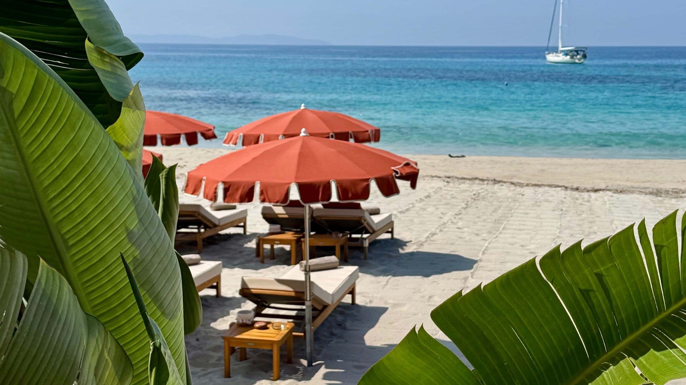
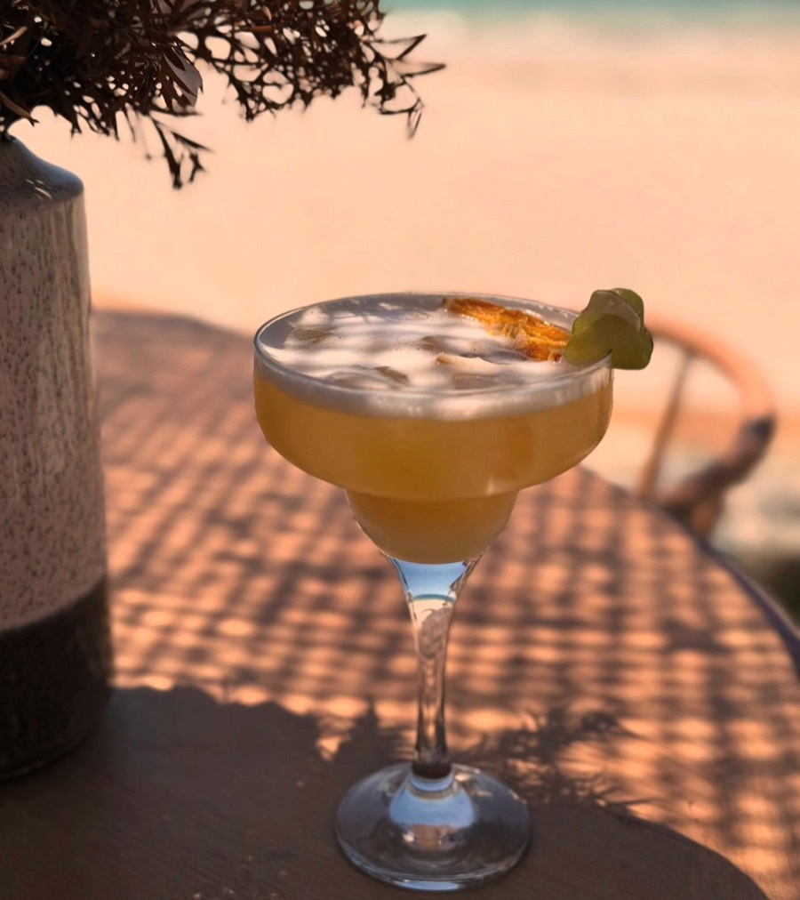

Adresse
20 route des Sanguinaires
20000 Ajaccio
Plage de Santa Lina, première plage à gauche en venant du centre. Grand parking gratuit.
Itinéraire Google Maps (nouvel onglet)
Restaurant · Plage privée · Bar à cocktails
Les pieds dans le sable, face au golfe d'Ajaccio
Fermé en ce moment (fin de saison) · réouverture au printemps (à confirmer)
Sur la plage de sable fin de Santa Lina, à quelques minutes du centre d'Ajaccio, L'Ariadne vous accueille du café du matin jusqu'au dernier cocktail. Transats et parasols, déjeuner face à la mer, apéritif au soleil couchant, puis musique quand la nuit tombe.
La plage privée
Matelas épais, parasols à franges et petites tables en bois, sur le sable fin et face à l'eau turquoise : on s'installe pour la journée, et le restaurant est à deux pas.
Cocktails & soirées
Mojitos, cocktails glacés et rosé de Corse bien frais : l'apéritif se prend face à la mer. Puis la musique monte. L'été, les soirées s'enchaînent, avec DJ et musiques du monde (programme à confirmer).
Anniversaire, mariage, soirée d'entreprise ? L'Ariadne se privatise.

20 route des Sanguinaires
20000 Ajaccio
Plage de Santa Lina, première plage à gauche en venant du centre. Grand parking gratuit.
Itinéraire Google Maps (nouvel onglet)D'avril à fin octobre
Tous les jours, de 10 h à 1 h 30
Horaires de la saison 2026 relevés sur un annuaire, à confirmer. Fermé l'hiver.
Par téléphone
04 95 52 09 63
Réserver une table en ligne (démo)
Conseillée le soir en été et le week-end. Transats : réservation en ligne.
Carte bancaire, espèces et titres-restaurant acceptés.